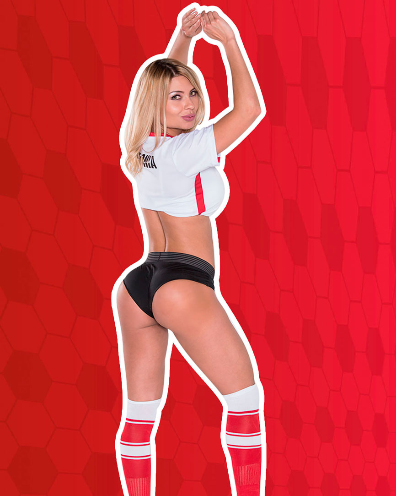
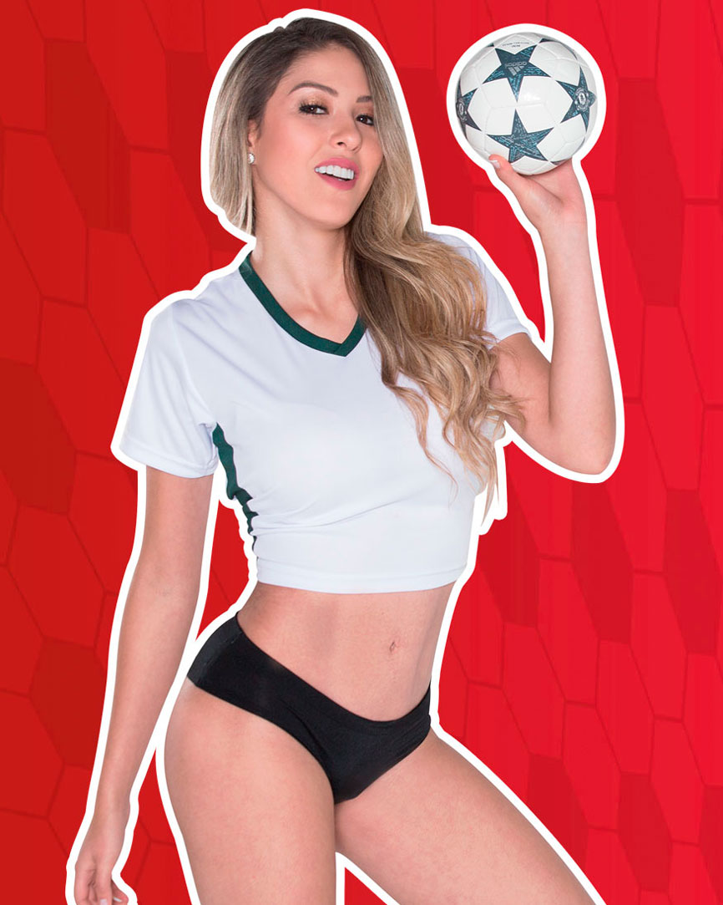
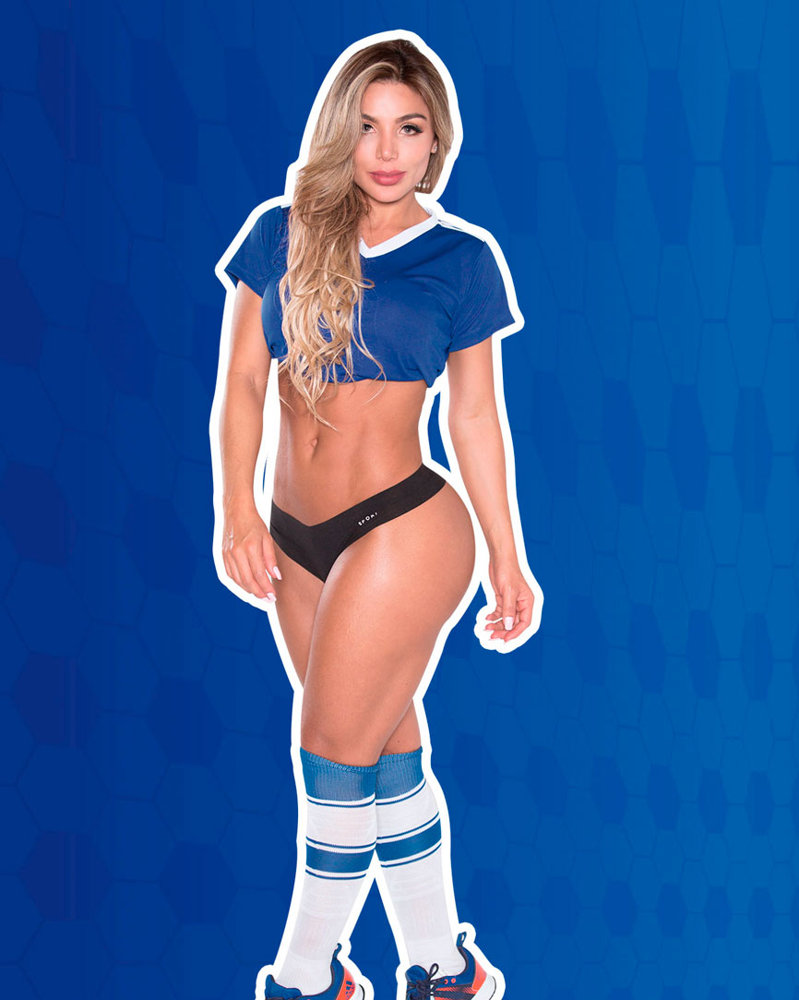
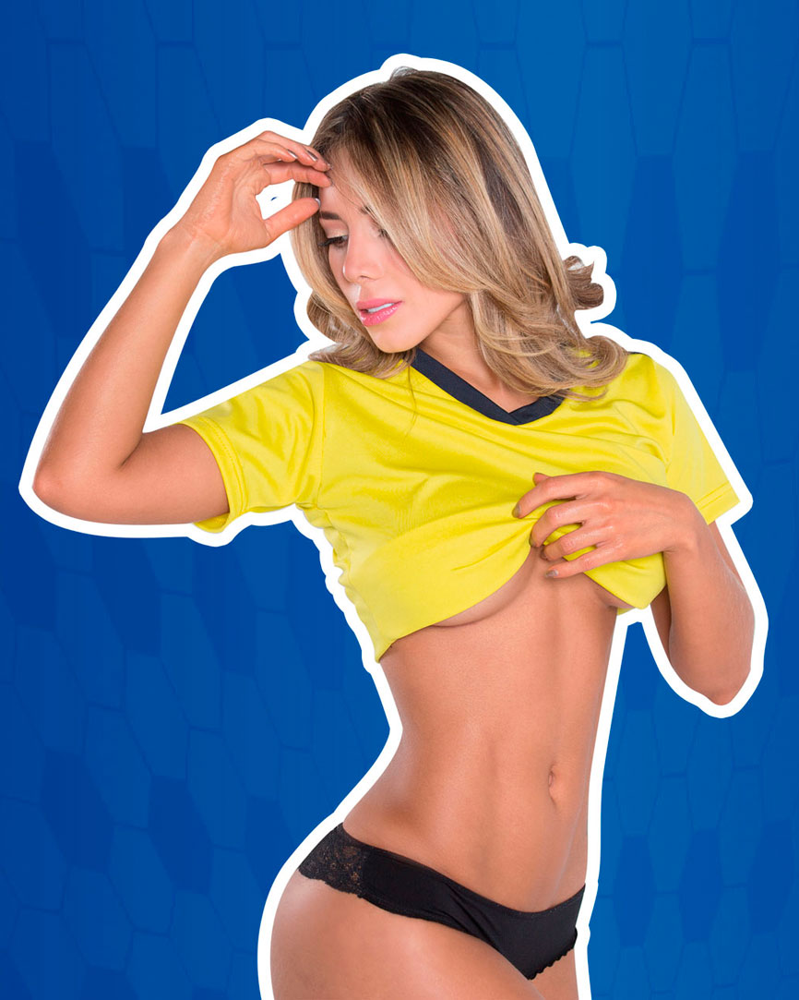
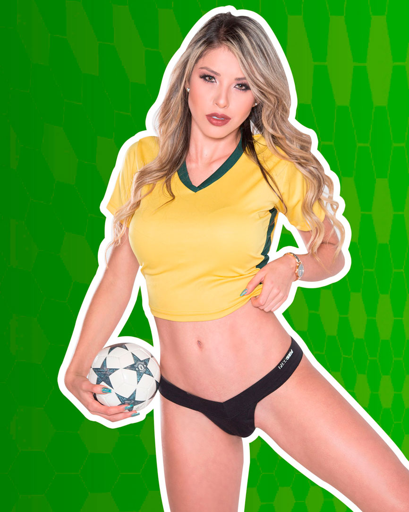
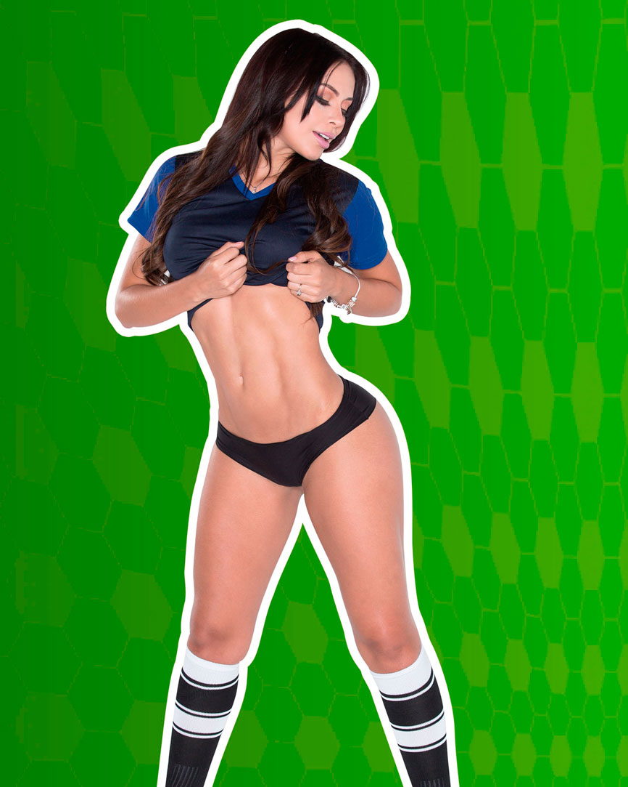
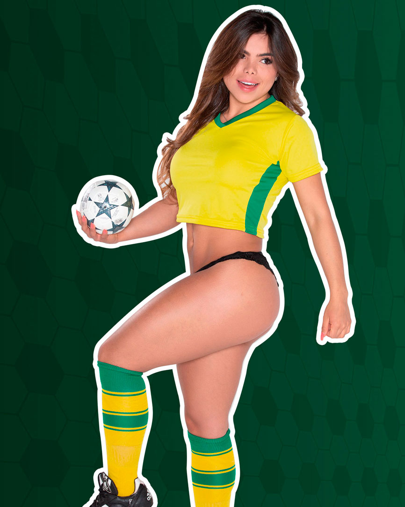
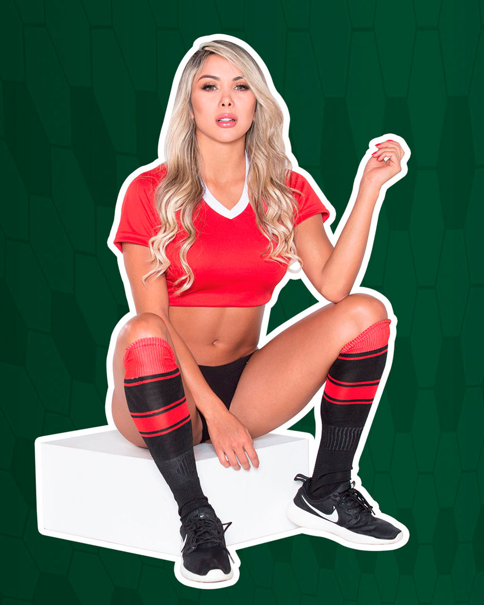
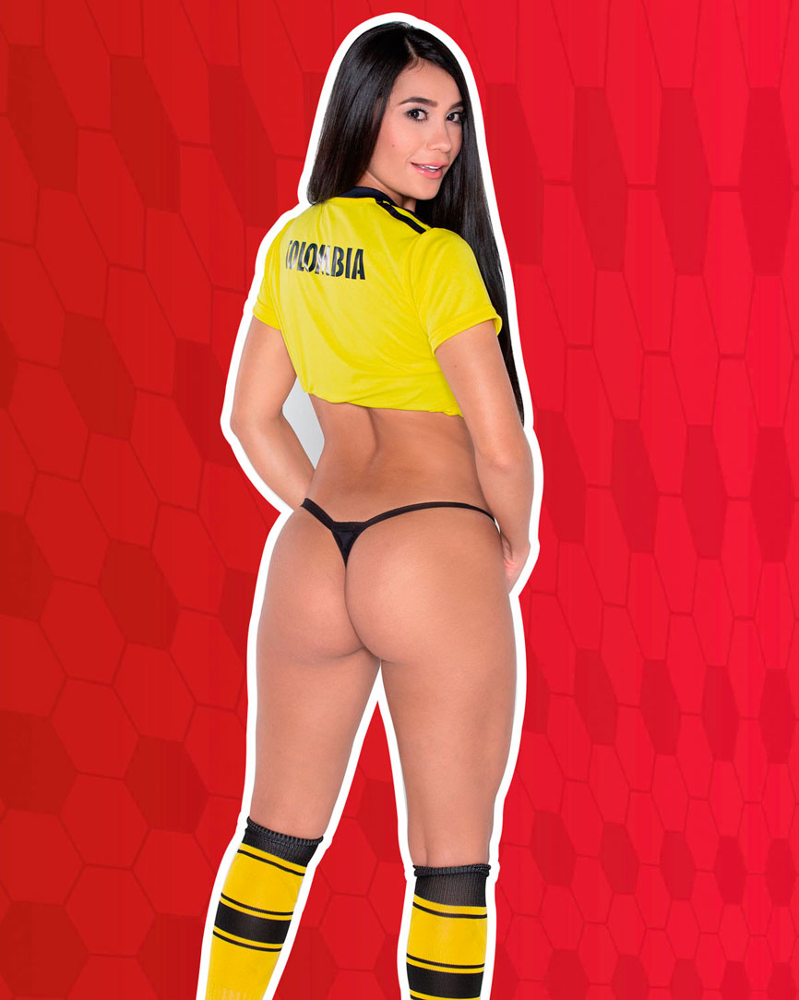
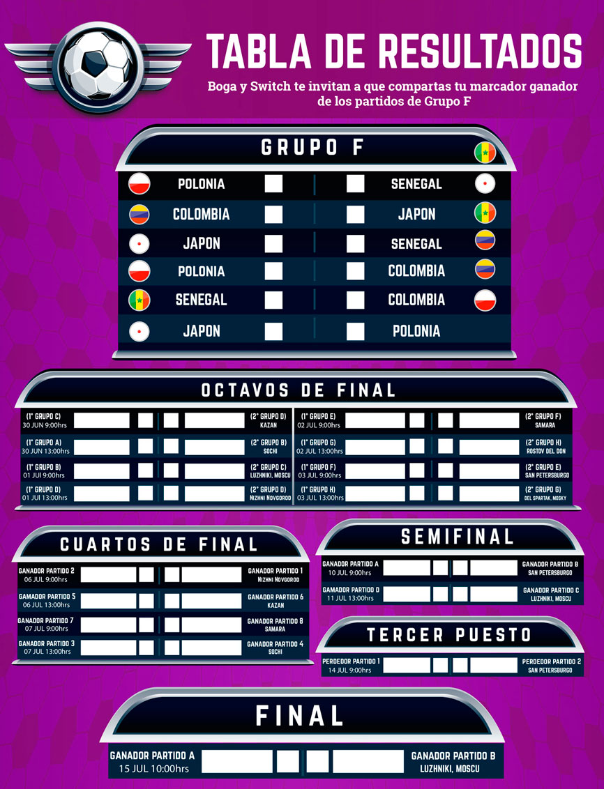

Versus mundialista
Agradecemos a:
LA VERA PIZZA
Visítalos en Instagram
@lavera_pizza
Dir. Autopista Norte # 79 – 76 Local 7
Tel: (1) 7031624
SEVEN LIVES por el vestuario.
Visítalos en Instagram
@sevenlives38
Calle 53B No. 25 – 21
CC Galerias Local 2144
Tel: (57) 310 8624310
CESAR PRADO por el maquillaje.
Preparador de reinas
y asesor de imagen
Visítalos en Instagram
@cesaraasesor
Carrera 65 No.94-74
www.cesarprado.com
Tel: (1) 3229003332
Las chicas más sensuales llegaron a Revista Boga de la mano de Switch, para inspirarte a estar pendiente del Mundial Rusia 2018, con la camiseta puesta nos enseñan sus mejores atributos, así que no te pierdas a ninguna de nuestras chicas Especial Mundialista Boga.
-
 ANGELINA VERGARA
POLONIA
Deportista en cuerpo y alma, actriz, modelo y madre, nos cuenta que lleva algún tiempo preparándose para ser boxeadora profesional, es una mujer alegre y extrovertida, ama bailar, otro de sus proyectos en proceso es la formación de su empresa de eventos, su plan perfecto para relajarse es la meditación, su comida favorita es la avena con miel y fresas, odia la cebolla.
Jugador favorito: Lionel Messi.
Posición: Delantera.
Lo mejor del mundial: La unión de diferentes países y en un país donde se viven tantos problemas y guerras el mundial hace que la gente se desconecte y pueda sentir alegría.
Tarjeta Roja: A todos aquellos que les gusta molestar con el pito de sus carros.
Instagram: @angelina_vergara_ -
 CAROLINA LONDOÑO
SENEGAL
El mejor plan es pasar tiempo con su hermana gemela Kate, hacer shopping juntas es lo mejor para ellas, aunque después pelean por la ropa aun así no pueden vivir la una sin la otra; su comida favorita es el sushi y no soporta el jugo de mango, cuando tiene tiempo libre lo mejor es una tarde de spa y peluquería porque Caro asegura que hay que consentirse.
Jugador favorito: James Rodríguez.
Posición: Delantera.
Lo mejor del mundial: Me encanta la celebración aunque ganemos o perdamos como buenos colombianos siempre celebramos.
Tarjeta Roja: Igual que su hermana le saca tarjeta roja a la infidelidad.
Instagram: @caro.twin
-
 JENIFER ROJAS
JAPÓN
Le encanta el deporte, es madre de un hombrecito de 8 años, creadora de la marca @gia_sport (ropa deportiva), estudia inglés para complementar su vida a nivel profesional y personal, se considera una mujer tranquila, luchadora y emprendedora, una mujer diez.
Jugador favorito: James Rodríguez.
Posición: Defensa.
Lo mejor del mundial: Son las fiestas, la celebración en familia y por supuesto en armonía.
Tarjeta Roja: Para todos los hombres groseros.
Instagram: @jeniferojas -
 LAURA GIL
COLOMBIA
Su meta es consolidarse como actriz, por lo que se encuentra preparándose para ello, le encanta sentirse y verse saludable entrena cinco días a la semana y no consume carne, aunque no le gusta el licor a la hora de celebrar no le dice que no a un buen vino, es una mujer apasionada y soñadora.
Jugador favorito: David Beckham.
Posición: Delantera.
Lo mejor del mundial: Es lograr unir a personas de diferentes nacionalidades.
Tarjeta Roja: A la Selección de Brasil.
Instagram: @lauragil0715
-
 LAURA GONZÁLEZ
FRANCIA
Después de participar en dos realitys, no ha parado de trabajar, se gradúa de Comunicación Social y Periodismo en el mes de agosto, estará lanzando su marca de ropa y ha tomado la decisión de radicarse en la ciudad de Bogotá, el paso a seguir es iniciar estudios de actuación.
Jugador favorito: James Rodríguez.
Posición: Defensa.
Lo mejor del mundial: Es que por dos veces consecutivas esté la Selección Colombia, en el 2014 casi ganamos, este año hay que esperar buenos resultados.
Tarjeta Roja: Para Neymar por que nos dio duro en el pasado mundial.
Instagram: @laugonzalez -
 KATHERINE LONDOÑO
AUSTRALIA
Publicista de profesión por lo que le encanta el tema del diseño gráfico, es muy buena maquillando, su pasión es conocer nuevos lugares y culturas, tiene una hermana gemela quien también hace parte de este especial mundialista, pero nos cuenta que son como el agua y el aceite, Carolina su hermana es la gemela tranquila, son muy unidas porque son un complemento.
Jugador favorito: James Rodríguez.
Posición: Defensa.
Lo mejor del mundial: Los penales, lo mejor es la tensión que se siente no sabes lo que va pasar.
Tarjeta Roja: A la infidelidad
Instagram: @kathe.twin
-
 MI LU
BRASIL
Talento es lo que le sobra a esta mujer, ama bailar y no discrimina ningún género, sabe dibujar y pintar en óleo y le encantan las esculturas, le fascina la poesía y leer sobre historia, su plan perfecto es compartir con su familia, no puede con las sardinas enlatadas pero ama la comida de mar.
Jugador favorito: Cristiano Ronaldo.
Posición: Central.
Lo mejor del mundial: Ver a los papacitos de los jugadores, celebraciones y los bailes que no faltan.
Tarjeta Roja: Para Luis Alberto Suárez por mordelón.
Instagram: @milu9.6 -
 ESTEFANIA FONSECA
SUIZA
Lo que no sabían de esta hermosa y encantadora mujer es que su talento oculto es cantar y lo hace muy bien, su prioridad es ser madre; el plan perfecto es ir a un spa porque los masajes son su debilidad, disfruta viajar, ama el salmón y es alérgica a los camarones, no soporta comer albóndigas así que no le prepares esto como cena sorpresa.
Jugador favorito: Ronaldo.
Posición: Central.
Lo mejor del mundial: Compartir esta celebración en paz, siempre unidos apoyando a la Selección Colombia.
Tarjeta Roja: A los hombres mentirosos
Instagram: @stefyfonseca1
-
 JENNY VÁSQUEZ
La cocina y el baile son sus talentos, se considera una mujer muy activa disfruta de montar en bicicleta, ir al gimnasio, la lectura y salidas con sus amigas son sus planes perfectos , es una mujer tranquila que busca estar en paz consigo misma y con los demás, le encanta el ceviche peruano.
Jugador favorito: Lionel Messi.
Posición: Delantera y portería.
Lo mejor del mundial: Celebrar los goles de la Selección Colombia.
Tarjeta Roja: A la Selección de Brasil, no le perdono lo que hicieron en el mundial pasado.
Instagram: @jennyvasquezm -
 NATY ORTIZ
NATY ORTIZ
Con dos profesiones muy demandantes, como lo son ser mamá y actriz esta encantadora mujer hace un excelente trabajo al no descuidar ninguna, personalidad arrolladora, coleccionista de libros ya que su pasión es leer y fan de la comida mexicana, nos muestra todo su talento.
Jugador favorito: Lionel Messi.
Posición: Delantera.
Lo mejor del mundial: Ver a la gente reunida apoyando a su equipo.
Tarjeta Roja: A los hombres mentirosos.
Instagram: @natyortizz
-
ROUS PERDOMO
Presentadora de Switch, le encanta bailar y pintar, el plan perfecto para ella es caminar y tener contacto con el medioambiente, tiene mucho talento a la hora de jugar vóleibol, su comida favorita es el salmón, pasta y el jugo de lulo, odia las uvas pasas, ama los gatos por eso tiene dos Kira y Yuya son su mayor alegría, le encanta pasar el rato viendo películas pero nunca la inviten a ver una de terror.
Jugador favorito: Radamel Falcao, es un buen ejemplo de la perseverancia, seguridad y fe en Dios.
Posición: Defensa central, me gusta dar confianza, defender lo que quiero.
Lo mejor del mundial: Es la unión que nos genera, se olvidan las diferencias y se busca apoyar los sueños de un país guerrero que quiere mostrar al mundo lo Mejor.
Tarjeta Roja: A las personas mentirosas, no hay nada como la sinceridad y transparencia.
Instagram: @rousperdomo -
